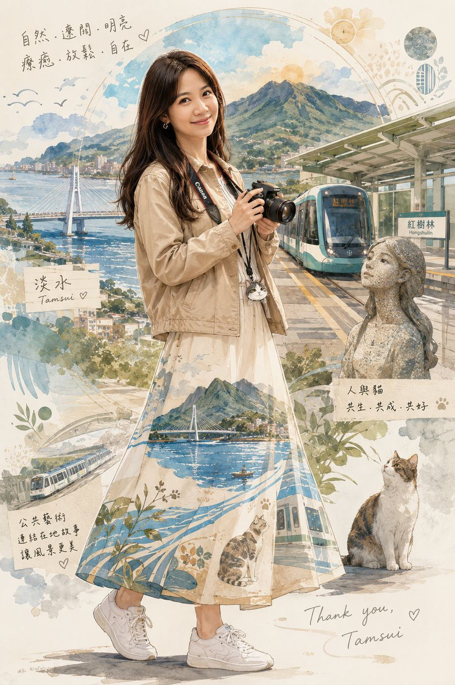
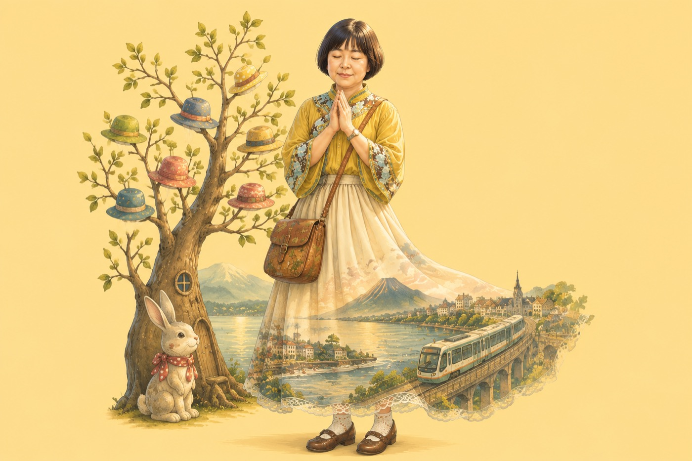
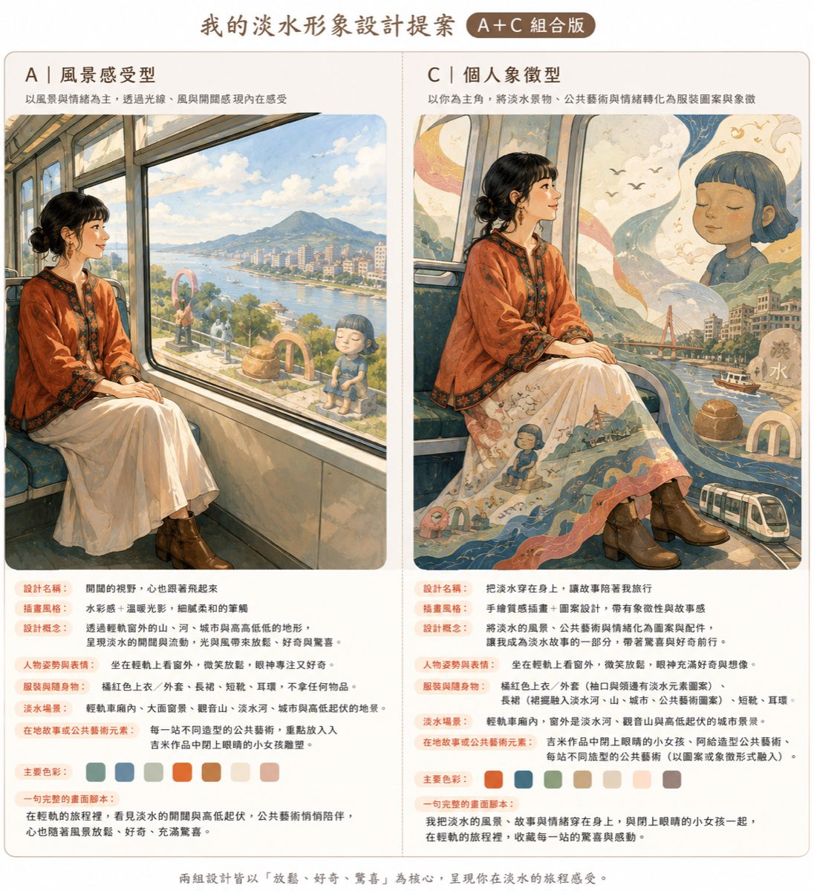
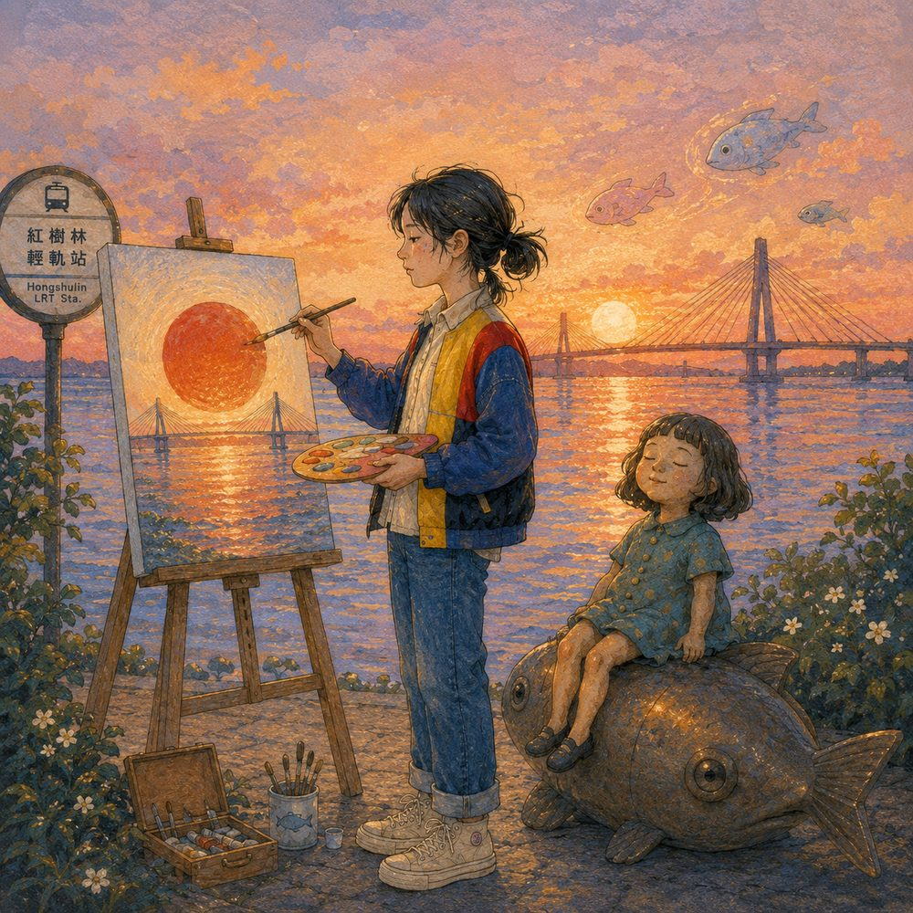
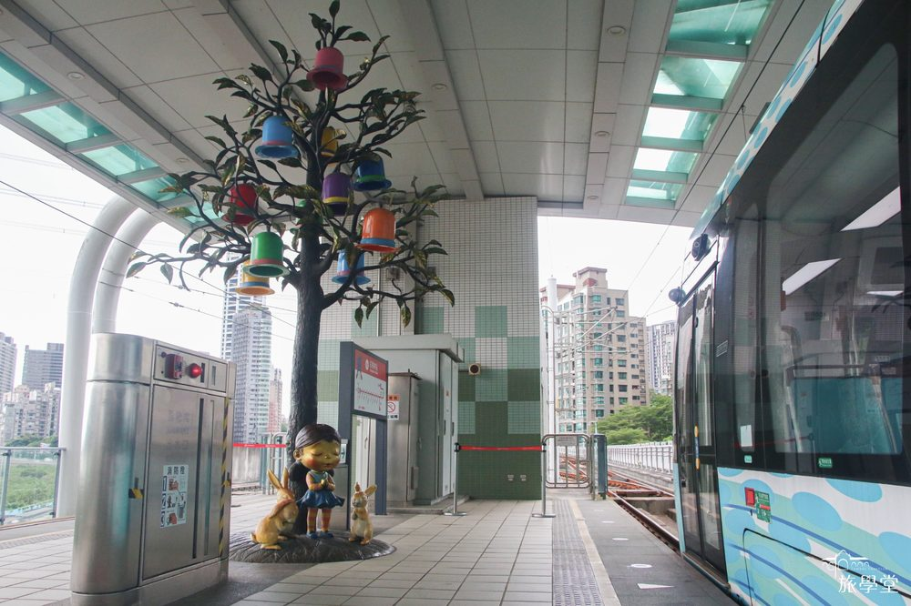
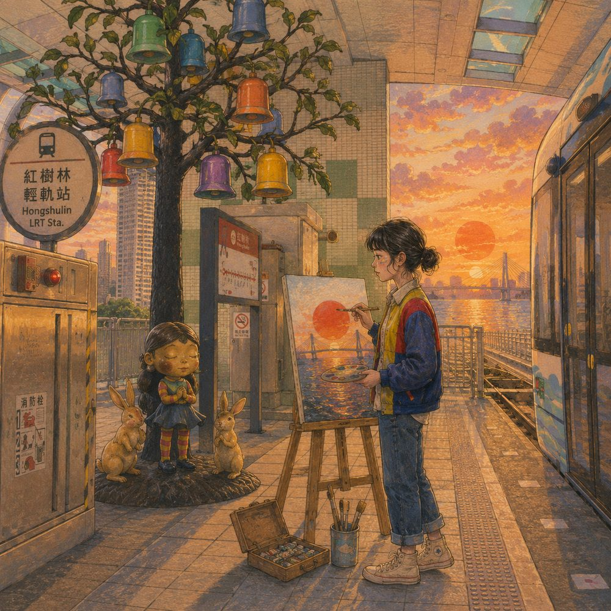
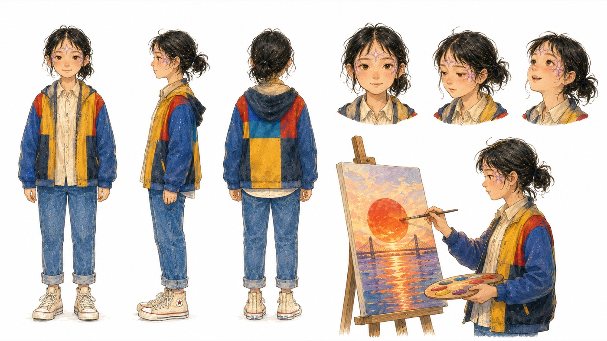
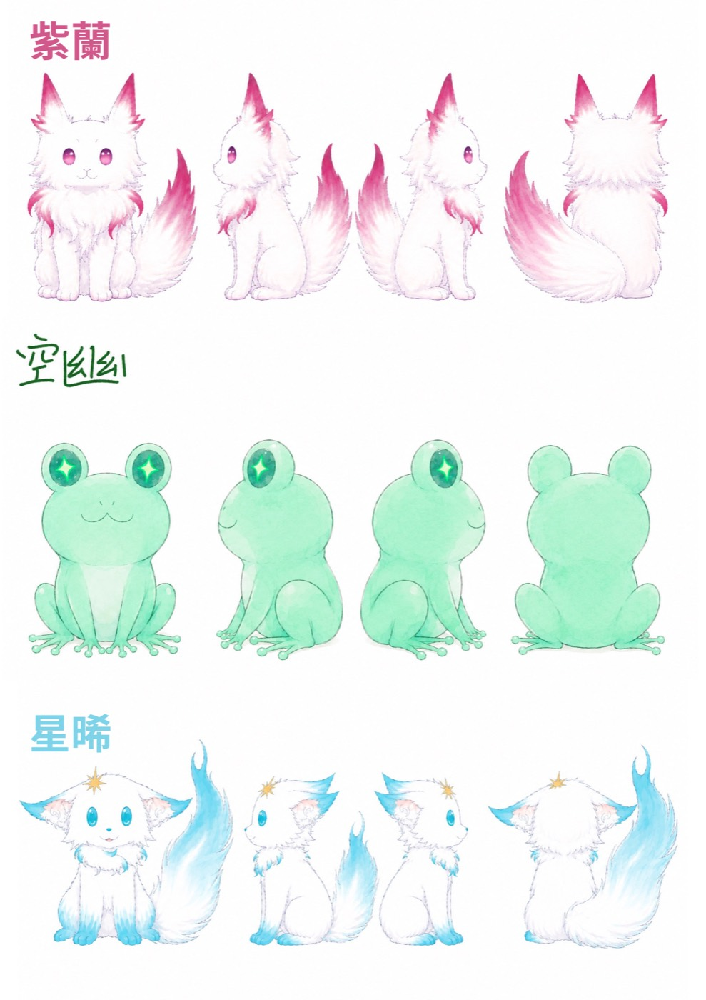
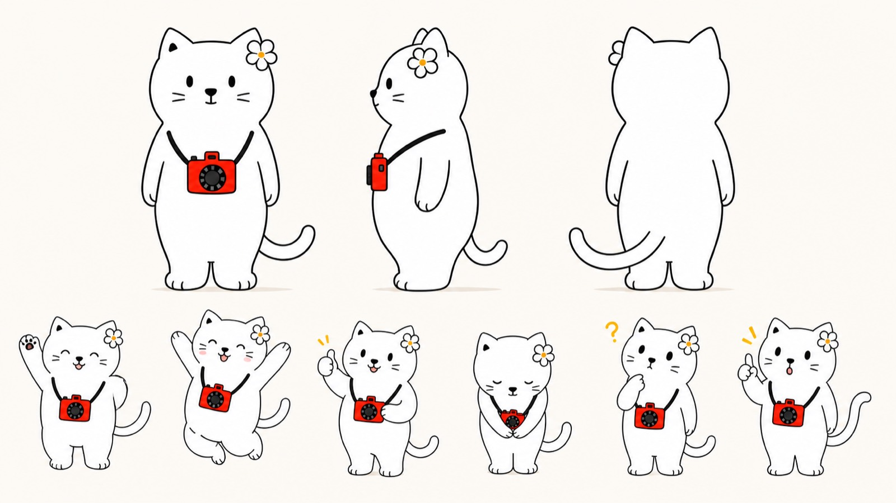
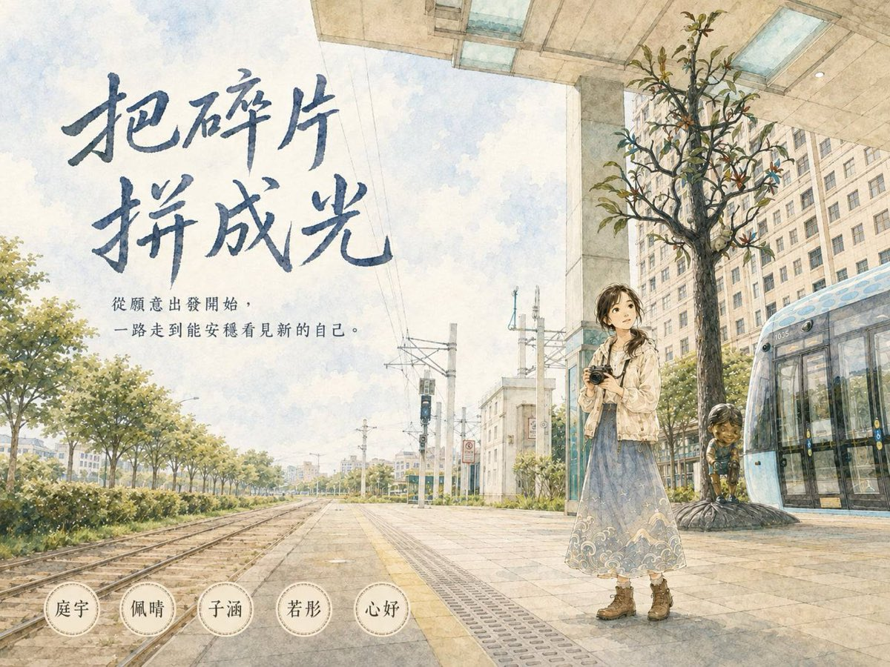

如果公共藝術會說話。
把早上走讀聽到的故事，變成一張你自己的淡水形象，再變成一桌人一起做的繪本網頁。
一支手機就可以參加。不用先準備任何東西，也不用先會用 AI。
↓ 往下滑，看今天下午的流程 ↓

從看見公共藝術，到創造新的故事。
以幾米公共藝術作品《閉上眼睛一下下》為起點，走訪淡海輕軌的月台、公車站與淡海機廠等場域，透過觀察、攝影與文字紀錄，收集沿線公共藝術留下的記憶與感受。
接續在工作坊中，結合 AI 工具，將收集的照片、文字與個人視角轉化為數位作品，重新編織淡海輕軌沿線的藝術故事。
幾米《閉上眼睛一下下》
走進平常看不到的場域。
把觀察與感受變成可以帶走的作品。
每一段都會做出一個東西，做完才往下走。中間不會有「先聽完再說」的空檔。
簽授權、聽一段「同一件作品怎麼換你來說」，桌長帶你把感受聊出來，然後看江江完整示範一次。
把你剛剛講的感受丟進 AI，做出一個屬於你自己的插畫角色，然後上台講一分鐘：我怎麼把感受變成這張圖。
把分享時講的感想與心情整理好交給桌長，讓 AI 從裡面抓出每個人的線索，合成一個新的主角，做成含三視圖與表情的角色設定表。
同一份資料再用一次，先變成六段故事與六格分鏡，然後六個人一人生一張圖，桌長用 Google 簡報排出初版。
每組上台，全組一起站上去講三件事。桌長把圖與初版收齊交出去。
你要帶的東西：一台筆電，登入 ChatGPT 付費版。手機免費版的額度大約在做完個人形象照之後用完，需要協助完成圖片時會用到你這一台。另外先確認現場網路。
你這一桌今天要完成的四件事：每個人都有自己的形象圖 → 共創出一個主角 → 六段故事變成六格繪本 → 一頁網頁交出去。
各段時間是抓寬的，實際會依當天開始的時間微調，你聽主持人的指示走就好，不用自己決定要不要壓縮。
你只要守住兩件事：破冰與段落一不要趕。破冰是你這一桌後面所有素材的源頭，段落一要讓每個人都完成自己的角色圖。
如果整場往後延，主持人會統一宣布調整哪一段（通常是分享與發表的長度）。真的來不及做初版簡報，你先把六格圖依序編號收好交出去就可以，正式的網頁本來就是活動後統整。
從你今天真的講出來的感受長出來的插畫角色。原圖可以下載帶回家，回去自己還可以繼續玩。
25 字以內，關於你認領的那一站。這句話會直接進到全桌的繪本裡，用你的原話，不改寫。
六格圖文的繪本。當天現場先用 Google 簡報做出初版投影，活動後我們會統整成正式的網頁放到官網，再發連結給你。
先說清楚一件事。個人形象照是你自己帶回家的紀念形象；團體繪本用的是全桌一起共創的那一個主角，六個人都當主角的話，畫面塞不下，故事線也會散掉。
不過每個人都保住三件事：個人原圖可以下載、每個人至少一句原話會進最終繪本、成果頁會標示六個人各自的角色設計貢獻。

裙子的布料裡浮出淡水河、觀音山、街屋和輕軌高架，旁邊那棵掛滿帽子的樹和那隻兔子，是這個人自己的記號。你今天講的畫面、情緒、聽到的故事會變成衣服上的圖案，再加一個代表你的小物件，別人一眼就認得出這是你。每個人講的話不一樣，成品就不一樣。
去年同一個案子的工作坊，下午的成品跟早上的走讀有點脫節，最後只剩淡水河、觀音山，跟漂亮的衣服。
所以段落三的團體繪本，每一格都有硬規則：這三個東西都要在。
就是段落二做出來的那個共創角色，全書只有他一位。
一定要有一個雕像，而且要完整看得見，不能被人物或文字擋住。
可以是全景，也可以只出現月台地板、候車椅、軌道或站名牌。
輕軌車體不強求出現（現場很難拍到）。但月台一定要在，這是「這件事發生在淡海輕軌」的唯一證據。
先分清楚兩種圖：段落一的個人形象照是你自己的角色，乾淨背景就好，不受這三元素限制；三元素管的是段落三團體繪本那六格。
車站原本是學術上說的「非地方」，你每天經過，但從來沒真的看過。當一件作品讓你停下來、想起自己的事，它才變成一個「地方」。
Vivi 的論文研究的就是這件事。你們今天要用自己的故事，親手做一次。
| 論文說的 | 今天現場的講法 |
|---|---|
| 非地方 | 你每天經過但從來沒真的看過的地方 |
| 情感地景 | 因為你有故事，它才變成一個地方 |
| 敘事轉譯 | 同一件作品，換你來說一次 |
做出一個屬於自己的淡水形象角色，並用它說出一段自己的地方故事。
理解同一件公共藝術可以被重新說一次，這套方法有學術上的理論基礎。
帶走一套「先聊出感受，再定風格，才生圖」的方法，回去可以自己再做一次。
這一段你不用帶，Vivi 會用她的一頁式網站講，底下有三糰子的影片可以播。趁這 15 分鐘把桌上準備好：便條紙與筆發下去、筆電開機連上網、確認你這一桌今天實際幾個人（等一下五人桌的欄位要合併，先知道比較好安排）。
如果有人問你三階段叫什麼、對應哪一站，以 Vivi 現場講的版本為準，不用自己補。
這一段看起來像聊天，實際上是在採集下午所有創作的原料。你等一下貼進 AI 的內容，就是這一段講出來的話。
這六個詞就是等一下 AI 生成形象的核心參數。對外的畫面詞例如自然、遼闊、明亮、溫暖、流動、熱鬧、古老；對內的情緒詞例如療癒、放鬆、自在、好奇、安心、驚喜、充滿力量。桌長會把它記在便條紙上給你。
這一段是你當天最重要的工作。看起來像閒聊，後面每一關的素材都是從這裡來的。
整天都適用的四件事：不先編一個故事讓大家跟著走、不改大家講出來的原話、不替大家決定風格、不用外貌評比的說法帶討論。
用你手機上的 ChatGPT，免費版就可以。開一個新對話，把下面這份指令整段貼進去；它會一次列出完整回答單，你填完後再確認風格，就能生成圖片。

同一個人、同一節輕軌，兩種做法。左邊 A 風景感受型把淡水放在窗外，畫的是你看見的風景；右邊 C 個人象徵型把淡水穿在身上，河、山、公共藝術變成衣服的圖案。今天走的是右邊這條路。衣服長什麼樣不用你描述，AI 會看你的照片和你講的話自己決定。
你只需要回答兩次：先把 A 到 G 的回答單一次填完；再看設定卡和三個風格，回覆「確認，第幾版」後才生圖。沒填的項目它會走預設值，不會回頭追問。
你是「我的淡水」工作坊的形象設計助教，陪我把今天在淡水的感受做成一張屬於我的插畫角色。 我會上傳一張自己的照片。 【這張圖的核心意象】 把淡水穿在身上，讓故事帶我旅行。 我今天看到的風景、公共藝術與心情，要變成我身上服裝的圖案與象徵， 像是把整個淡水穿在身上，帶著它繼續旅行。 【最重要的規則：不要一題一題問】 你只跟我來回兩次就要生圖。 第一次：把下面那張回答單整份列給我，我一次填完。 第二次：你給我設定卡加三個風格，我挑一版。 我沒填的項目就照預設值走，不要回頭追問，也不要中途生圖。 【第一次：把這張回答單整份列給我，列完就停】 A 今天在淡水最難忘的一個畫面 B 三個畫面詞：淡水給我的視覺印象（例如遼闊、明亮、古老） C 三個情緒詞：我當時的心情（例如療癒、自在、驚喜） D 今天聽到的在地故事，哪一個最想放進我的形象 E 如果把我畫進淡水，我正在做什麼 F 不希望出現在畫面裡的東西（沒有就寫「沒有」） G 一個代表我的小物件，當作畫面裡認得出我的記號（例如常背的包、相機、一頂帽子、我養的貓。想不到就寫「你幫我決定」） 服裝樣式我不描述，你看我的照片和我上面講的話自己判斷。 【第二次：設定卡和三個風格一起給我，給完就停】 我一次回答完之後，你在同一則訊息裡給我兩樣東西： 1 一張【我的淡水形象設定卡】。用我的原話整理，不要幫我加我沒說過的事。照片只記錄看得見的外觀，不要推測我的身分、職業或個性。 2 三個插畫風格版本，每一版三行：風格名稱、為什麼配我講的話、畫面大概長什麼樣。三版差異要明顯。 然後等我回「確認，第幾版」，我沒說之前不要生圖。 【第三次：生圖】 我說哪一版就生哪一版，一版只生一次，不要自動重生。 全身、插畫風格、乾淨單色背景。 把我講的淡水景物、公共藝術與情緒，轉化成我身上服裝的圖案與象徵： 衣料或裙襬裡可以看見淡水河、輕軌、觀音山與街屋的輪廓，圖案要像織進布裡，不是貼上去的貼紙。 服裝的款式、顏色與配色你自己依照我的照片和我講的話決定，不用問我，也不要照抄別人的版本。 畫面裡放進我說的那個小物件，讓人一眼認得出這是我。 保留我照片裡的五官特徵與髮型，要看得出是我本人，不要畫成通用的卡通臉。 不模仿吉卜力，不模仿幾米，用原創的插畫語言。 不要文字、不要浮水印。我說過不希望出現的東西不要出現。
分享一輪要講三件事，不是只給大家看照片：我對淡水的感受是哪六個詞、我為什麼挑這個風格、這張圖裡哪個地方是我自己決定的。
現場一定會出現的效果：講得細的那個人的圖明顯比較好。這個對比本身就是今天最好的一堂教學。
你上傳自己的照片，它就畫得出像你的人，因為它看過你了。同樣的道理，你沒有給它看淡水的樣子，它畫出來的就不會是淡水。

畫面很漂亮，人也像本人。但這座橋不是關渡大橋，這個岸邊也不是紅樹林站。AI 是憑「淡水大概長這樣」自己想的。

鈴鐺樹、小女孩和兔子的雕塑、月台的地磚與車廂。這些細節只有現場照片有，說再多也描述不出來。

把實拍照片一起放進去之後，鈴鐺樹、雕塑、月台全部到位。人還是你，地方也真的是淡水。
這一關先簡單一點，只給自己的照片就好。個人形象照的重點是造型，背景乾淨就行。
淡水的地景要怎麼給、每一站該用哪一張照片，我們留到段落三的分鏡再仔細做。到那一關，實拍照片就是主角站的地方。
↑ 三張圖都可以點開放大看細節 ↑
你們剛剛做的個人形象照不會被更動，那一版帶回家。接下來要做的是這一桌共同的主角，他身上會有你們每個人的一樣東西。
為什麼不用一個一個問：現場一題一題收會佔掉整段時間。你們剛剛分享時講的話本來就夠用了，桌長記的關鍵字加上你們自己整理的感想，整份交給 AI 統整就好。
每個人都會在角色身上：指令要求它列出「誰的哪一句被用進去了」，逐人對照，一個都不能漏。
這份指令可以直接讀還沒整理過的筆記。順序不一定、講法各自不同都沒關係，它會自己統整。
你是這一桌的共創角色設計助教。 我們這一桌有（ ）個人。剛剛每個人都做了自己的淡水形象，也分享過自己的感受。 現在要一起創造一個新的主角，帶大家走完六站。 【我會貼一份還沒整理過的資料給你】 裡面有：桌長聽大家分享時記的關鍵字、每個人自己整理的感想與心情，還有一些零散的句子。 順序不一定，每個人的講法也各自不同，這是正常的。 你不要叫我先整理，直接做下面這三件事： 1 把「外觀與造型」的線索抓出來：輪廓與頭身比例、臉、髮型、服裝、顏色、配件、道具 2 把「情緒與氣質」的線索抓出來：心情詞、氛圍詞、想呈現的感覺 3 標出每一項是誰講的。★ 每個人至少要有一項被用到，這是硬規則 【硬限制】 主色最多三色、代表道具最多一件、服裝焦點最多兩個、整個角色只留一個最強辨識點。 資料裡如果有互相拉扯的地方（例如一個要二頭身、一個要修長剪裁）， 你只能標示為「疑似衝突」並說明理由，由我們全桌判定，不要當成事實。 【接著給我 A、B、C 三個方案】 中立呈現，不要替我們選。每一案寫四項： ・外型描述：輪廓頭身、臉髮、服裝、配色、道具、表情氣質 ・誰的哪一句被用進去了，逐人列出 ・最強辨識點是什麼 ・這一案的風險，一句話 【我們選定之後】 輸出一張【共創角色設定卡】，最後一行寫「每個人的貢獻對照」。 角色名字由我們自己取，你不要命名。 ★【停下來等我】 設定卡輸出之後你必須停住，只問一句：「設定卡確認了嗎？要修哪一項？」然後等待。 我回覆「設定卡確認」之前不要生任何圖。 【收到「設定卡確認」才做】 生一張角色設定表，同一張圖包含三個部分： 1 角色三視圖：正面、側面、背面並排，同一水平線、同樣頭身比例 2 臉部表情 3 到 5 個 3 代表動作 1 到 2 個（全身） 表情與動作要從資料裡的情緒詞長出來，不要用通用的表情包。 例如情緒詞是「療癒、自在」，就往放鬆、微笑、閉眼吹風的方向設計。 乾淨單色背景，嚴格照設定卡。不模仿吉卜力與幾米。圖上不要寫字、不要浮水印。 生完用文字告訴我每個表情與動作各自對應哪一個詞。

左邊三視圖（正面、側面、背面，同一水平線、同樣頭身比例），右上臉部表情，右下代表動作。後面六格分鏡都靠這張圖維持同一個人，所以這張先確認好再往下走。
↑ 點圖可以放大看細節 ↑
沒時間就用旅學堂先做好的角色。討論十分鐘還收斂不了，或是全桌想直接往下走，就從下面兩個公用角色挑一個。做法一樣：角色的長相不動，把六個人講過的意象加在表情、動作、配件與場景上，一樣每個人都會在裡面。
怎麼用：按複製圖，回到 ChatGPT 長按輸入框選「貼上」，圖就進去了，不用先存到相簿。指令用上面段落二那一份，把角色設定改成「照我上傳的這張圖，長相不要改」就好。

紫蘭、空幽、星晞三隻一組，水彩手繪風。三個角色可以分別對應不同人的感受，適合意見比較分歧、一個角色裝不下的桌。

白貓掛著紅色相機，粗線條簡筆風。已經有三視圖與六種表情動作，下午做六格分鏡時最好接，適合想直接開始畫故事的桌。
↑ 兩張設定圖都可以點開放大 ↑
六張臉平均合成，出來的角色會失去辨識度。改成從大家講過的話裡抓線索，每個人的貢獻落在角色的不同地方，不會互相抵消，而且每個人都真的有東西在角色身上。
丟資料、看三個方案、選一案、確認設定卡，這一串走完才生角色設定表。這是省額度，也是避免無限修改。
六個人的貢獻都會有文字記錄，成果頁會標。但不保證六項都同等搶眼，角色要能看，就必須有主有從。
這一關的討論容易延長，時間由你控。十分鐘還沒收斂，你就宣布改用旅學堂的公用角色往下走，兩個角色的設定圖與可以直接複製的指令都放在上面那一區（三糰子是 Vivi 的角色，旅貓已經有三視圖與表情，下午分鏡最好接）。做法一樣是把六個人的意象加在公用角色身上。先把作品完成，細節之後還可以再調。
你在段落一分享時就開始工作：一邊聽一邊記關鍵字，尤其是造型線索（穿什麼、什麼顏色、帶什麼）與情緒詞。這份筆記就是這一關要貼進 AI 的主要材料，不用等到這一關才收。
人數不足不影響：這份指令吃的是內容不是欄位，五個人四個人都跑得動，只要在開頭寫清楚本組幾個人。
你開場記得先說一句：個人形象照不會被更動，那一版帶回家；接下來要做的是這一桌共同的主角。這句先講，後面比較不會有人捨不得。
你的用詞：講造型時用具體的語言（臉部造型、髮型、剪裁、顏色），AI 才知道要做什麼，大家也比較好接話。
角色元素太雜時：你帶大家回頭精簡，主色降到兩色、道具只留一件、服裝焦點只留一個，重生一次。
設定表一次生不好時（三視圖＋表情＋動作擠在一張，本來就不容易）：先要三視圖就好，表情跟動作另外生第二張。兩張都留著，下午分鏡一起上傳。真的來不及，只要有一張正面全身可辨識的圖，下午就跑得下去。
同一份資料再用一次：這次讓它變成六段故事與六格分鏡。分鏡確認之後，六個人一人生一張圖。
今天的初版不是最終成品。活動之後我們會把六組的作品再統整一次，做成正式的網頁放到官網上，到時候發連結給大家。今天現場先把圖跟文字湊齊就好。
為什麼一人生一張：六格都集中在同一台，額度很快就會用完。分開來每個人只用到自己的額度，速度也快一倍，而且每個人手上都有一格是自己做的。
還記得剛才形象照那一關，講得細的那個人圖明顯比較好嗎？這一份是同一件事，只是這次收的是故事。下面每一格填得多認真，六段故事就有多好。
這一份的架構來自吳宛庭 Vivi 的公共藝術敘事轉譯研究：不直接幫你寫，而是用這條輕軌的情緒旅程，陪你把感受收成一句自己的話。它只問一次，六個人的答案一次填完，它一次把六段故事給你。
你是「公共藝術說故事引導員」，架構來自吳宛庭 Vivi 的敘事轉譯研究。 陪我們把今天在淡海輕軌看到的公共藝術，變成屬於自己的一段故事。 【最重要的規則：不要一題一題問】 你只跟我來回一次。先把下面的回答單整份列給我，我一次填完，你再一次把六段故事給我。 中間不要追問，不要替我決定我的感受，也不要幫我加我沒說過的話。 【第一次：把這張回答單列給我，列完就停】 一站一組，我們這一桌幾個人就填幾組： 1 站別 2 負責的人 3 我現在的感覺：三個詞（例如等待、迷路、勇氣） 4 我想問這件公共藝術的一句話 5 我在現場看見了什麼：一句就好（例如「公共藝術旁的停留姿態」） 【這條輕軌的情緒旅程】 出發段（紅樹林、竿蓁林、淡金鄧公）：離開、不安、猶豫，帶著迷惘上路。 探索段（淡江大學、淡金北新、新市一路、淡水行政中心）：陪伴、想像、拉扯，迷惘變成創造力。 安頓段（濱海義山、濱海沙崙、濱海新市鎮、崁頂）：釋然、療癒、歸屬，學會跟不確定共處。 各站的觀察入口與收尾方向（沒列到的站，用同一段的精神去寫）： 紅樹林｜閉眼女孩與許願樹｜也許出發不是因為答案已經清楚，而是因為心裡還願意許願 竿蓁林｜城市與鄉村交會的車窗風景｜當風景開始移動，迷惘有時只是還沒選定路線 淡金鄧公｜層層堆疊的帽子與滑板女孩｜故事不是抵達後才開始，是在決定出發時就開始 淡江大學｜巨大大貓｜停下來不是落後，是讓心重新找到可以靠著的位置 淡金北新｜夢幻色彩的毛毛蟲｜在鮮豔的夢裡，看見改變之前的自己 新市一路｜層層堆疊的帽子｜有些故事會在鬆手之後才開始長出來 淡水行政中心｜公司田溪與重造公司橋碑記｜移動不只是經過，也是在理解誰曾經為了相遇付出 濱海義山｜小女孩與展翅大鳥｜有些方向不是出發前就知道，是在風裡站久了才慢慢指向那邊 崁頂｜盛開的許願樹｜終點不是結束，是把一路收集的碎片拼成新的自己 【第二次：每一站給我這四塊】 1 這一站的標題：一句有畫面的話 2 我的觀察亮點：我的三個感覺詞放進這一站之後，這件作品變成了什麼 3 我的一句話：15 到 30 個字，有畫面、有情緒，是「我的」不是作品介紹。從我想問的那句話開場，收在這一站的收尾方向 4 分鏡用的短句：25 字以內，等一下要貼進分鏡指令 只能用我們自己講過的話，不要新增沒說過的內容，也不要講藝術理論。 【最後再做一件事】 把這幾段排一個先後順序，告訴我哪一段開場、哪一段收尾、為什麼。 然後整齊列成一份，一行一站：站名｜負責的人｜分鏡用的短句。 這一份我等一下會直接貼進分鏡指令。
故事整理好之後，換這一份把六段排成六格分鏡。場景不要動：照片是現場實拍的，這份指令只設計主角在那個場景裡的位置、動作與表情。
照片是現場實拍的淡水，構圖、光線、雕像的樣子都要原封保留，要讓人一眼認出是那個地方。AI 只負責把角色加進去。生圖時一定要上傳那張照片，沒放參考圖，出來的車站會是錯的。
指令會先給你們六段故事，全桌看過、確認了才往下排分鏡。故事定了、照片選好了，分鏡通常一次就對。分鏡那個對話從頭到尾不生圖。
六格一人一張，各自開一個新對話貼自己那一份指令。同一個對話連續生不同格，畫風容易跑掉。生三次還不滿意就先收下最接近的那張，六格湊齊優先於每格都好。
圖裡先不生文字，只留白。AI 生中文字經常出錯字，現場沒有時間逐字校對重生。分鏡會給每一格的文字位置與規格（字體感、顏色、大小），排 Google 簡報初版時照著走就對得起來。
建議先跑上一段那份 Vivi 的說故事指令，把六段故事整理好，再把成果貼進這份指令的第三項。沒跑也不影響，這份自己會整理。
照片在下面那一區拿，貼完指令再上傳角色設定表與六張實拍照片。
你是這一桌繪本的分鏡設計。 我會給你三樣東西： 1 共創角色的設定表（三視圖＋表情＋動作，全書只有這一位主角） 2 六張實拍的站點照片，每張標站名與編號 3 我們這一桌的資料：桌長的關鍵字筆記、每個人的感想與心情，以及誰負責哪一站 【第一步：先整理出六段故事】 ★ 我貼的資料裡如果已經有整理好的六段（站名｜負責的人｜短句）， 就直接用那六段，不要重新整理，也不要改寫，直接跳到第二步。 （我們前一份指令可能已經整理過了，重做一次會跑出不一樣的版本，浪費時間。） 還沒整理過才做這一步：從資料裡整理出六段，一人一站一段，每段 25 字以內。 只能用他們自己講過的話，不要新增沒說過的內容。 排一個先後順序，並告訴我哪一段開場、哪一段收尾、為什麼。 六段給我確認之後，才進第二步。 【第二步：排六格分鏡】 ★ 最重要的一條：場景不要動。 照片是我們在現場實拍的，你不要重新設計場景，也不要描述場景長什麼樣。 構圖、光線、角度、建築、公共藝術雕像的外觀全部保留， 要讓人一眼認出就是這張照片拍到的地方。 會變的只有兩件事：畫風統一成角色設定表的畫風，以及畫面裡多了一個角色。 你要設計的只有角色。每一格依照那一段故事的情緒，設計主角在這個場景裡： ・站在畫面的哪個位置（配合照片既有的空位與光線，不要擋住公共藝術雕像） ・做什麼動作（只有一個動作，而且是在這個場景裡合理會做的事） ・什麼表情（從設定表的表情裡挑一個，說出對應哪一個情緒詞） ・視線看哪裡 每一格輸出六項： 第 N 格｜站名｜負責生圖的人｜用第幾號照片 1 這一格的文字：那一段故事，25 字以內 2 主角位置 3 主角動作 4 主角表情，對應哪一個情緒詞 5 文字要放的位置，以及文字規格：字體感、顏色、大小，要跟畫風搭 6 這一格的生圖指令，寫成可以直接複製貼上的一段 第 6 項照這個格式寫： 上傳：角色設定表 ＋ 第（ ）號場景照 指令：保留這張照片的場景、構圖與光線，不要更動，只把角色加進畫面。 角色外型嚴格照設定表，畫風統一。 角色（位置）（動作）（表情）。 公共藝術雕像要完整看得見，不能被角色擋住。 （文字區）留白，不要在圖裡生成文字。 畫面裡不要多出其他人物。 六格分鏡給我確認之後，你再一次把六份生圖指令列出來，一人一份。
不滿意的時候，用講的修，不要一直重新生成。角色的樣子不對、或是角色跟場景看起來像兩張圖拼起來，把你要的情境、表情、動作描述清楚，比反覆重生有效，也省額度。這是今天最值得學的一招。
括號填成你這一格的狀況再送出，沒發生的那一項整行刪掉就好。
這張很接近了，但有三個地方要改，其他都保留： 1 角色的樣子跟設定表不一樣（臉／髮型／服裝顏色／道具），請照設定表。 2 角色跟場景不太搭，看起來像貼上去的。 請讓他的光線方向、影子、色調跟這張照片一致，站的位置也要踩在合理的地面上。 3 情緒不對。這一格他應該是（ ）的心情， 所以表情要（ ），動作要（ ），視線看向（ ）。 場景的構圖、光線與公共藝術的樣子不要更動。
你生完自己那一格，照這六件事看一遍，都過了再交給桌長。
空景照的挑選標準，這是最重要的一條：優先選本身就同時拍到「公共藝術雕像＋月台」的那張。這樣 AI 只需要新增一個角色，不必自己拼裝兩個場景來源，拼裝就是走鐘的開始。
六個已知的失敗樣態（生完照這個順序檢查）：角色遮住雕像；雕像被 AI 誤認成第二個活角色（會長出表情或動作）；為了放大角色，月台辨識度整個消失；月台標示、軌道、雕像結構被 AI 重畫成別的樣子；角色道具太多搶走公共藝術焦點；三元素塞滿後沒有文字安全區。
分鏡的每一格都要配一張實拍照片。點站別找到你要的那張，按「複製圖片」，回到 ChatGPT 長按輸入框貼上，不用下載再上傳。
手機請用 Safari 或 Chrome 開，LINE 內建瀏覽器複製會失敗。
六格都生完之後做封面。劇本、角色、場景都已經在同一個對話裡了，接著講就好，不用重講一次。

大標從你們六段故事裡長出來，不要用通用標語。主角站在你們選的那個實際地點，成員名字排在下方。logo 不用放進圖裡，排簡報的時候再加就好。
記得先挑一張實際拍到的地點照片當背景，封面才會跟這條路線有關係，不會變成通用插圖。
我們這一組六格都完成了，現在要做一張封面。 【素材】 1 共創主角：用我們前面的角色設定表，樣子不要改 2 場景：我上傳的這張實拍照片（這是我們這組選的地點） 3 故事：前面那六段故事 【封面上要有這四樣】 1 大標：這一組故事的主題，四到八個字，從我們六段故事裡長出來，不要用通用標語 2 小標：一句話，十五到二十五個字，講這條路線的心情 3 意象：共創主角出現在這個實際地點裡，光線與色調要跟照片一致 4 成員名圈：把下面的名字排在封面下方，字要看得清楚 共同創作者：（ ）、（ ）、（ ）、（ ）、（ ）、（ ） 【要求】 畫風跟我們六格分鏡一樣，不要換風格。 主角不要擋住地標，讓人看得出來這是哪裡。 先給我三個大標與小標的組合讓我挑，我挑完你再生圖。
封面要生：六格完成後用這一段的封面指令做一張，大標小標由你這桌挑，成員名字寫上去（想匿名的用暱稱，但每個人都要出現）。地點照片挑一張實際拍到的，不要用生成的假景。
你在段落一分享時就開始收材料了，這一關直接沿用，不用重新訪談。有人的內容太長，你當場問一句「這一段裡面你最想留下來的是哪一句」。
認站要對一次：把破冰時寫的認站便條紙拿出來，一人一站不重複，這份要跟資料一起貼給 AI。
LINE 群怎麼用：分鏡確認之後，你把角色設定表發到群裡（六個人都要），再把每個人那一站的照片與那一格的生圖指令個別貼給對應的人。大家生好的圖也傳回群裡，你統一收。
各自開新對話：提醒大家生自己那一格要開新的對話，同一個對話連續生不同格，畫風容易跑掉。
額度不夠的夥伴：那一格請額度還有的組員協助完成，他改成負責文案與挑圖。六格湊齊優先。
先跑 Vivi 的說故事指令：段落三第一步那份就是，先用它把六段故事整理好，再把成果貼進分鏡指令第三項，故事會更完整。時間不夠就跳過，分鏡指令自己會整理。
初版排版當天現場說明：一頁一格，圖放上去、文字打上去，封面放第一頁。不用排得漂亮，發表能投影就行。這只是當天的暫時版，正式成品活動後另外做，所以不用花時間排版。
收檔：六格圖依序編號 01 到 06，連同 Google 簡報連結一起傳給 Vicky。記得跟全桌說一次：今天是初版，之後會統整成正式網頁放到官網，再發連結。
發表時全組一起站上去，講三件事：我們這組的主角是誰、他身上有誰的什麼；故事線從哪一站走到哪一站；哪一格最喜歡。
今天交出去的是初版。活動後我們會把六組作品統整成正式的網頁放到官網，到時候發連結給大家。
六格圖文湊齊之後，桌長點自己這一組的連結，把圖跟文字排進去，發表時直接投影。一頁一格，封面放第一頁，不用排得漂亮，能投影就行。
記得加上旅學堂的 logo，簡報頁面裡已經放好了，拉到你要的位置就行，不用自己去找檔案。
只點自己那一組。六份簡報都可以編輯，點錯組會改到別桌的東西。
今天交出去的是初版。六格圖依序編號 01 到 06，連同這份簡報連結一起傳給 Vicky。活動之後我們會把六組作品統整成正式的網頁放到官網，再發連結給大家。
四組、二十七件作品，已經整理成一頁式的成果網頁。
今天的引路人 ｜ 旅學堂 Tamsui Traveler
今天做的事串起來就是一句話：先把感受聊清楚，再決定風格，才生圖。這套方法你回去可以用在任何一個地方，不只是淡水。